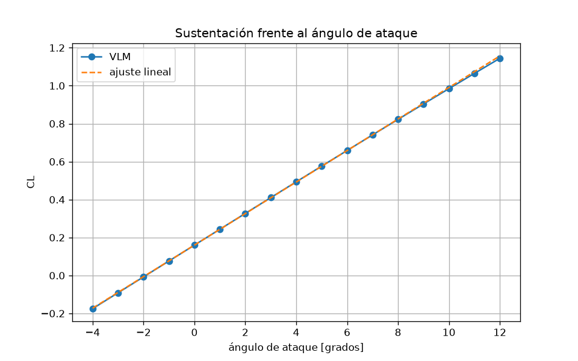
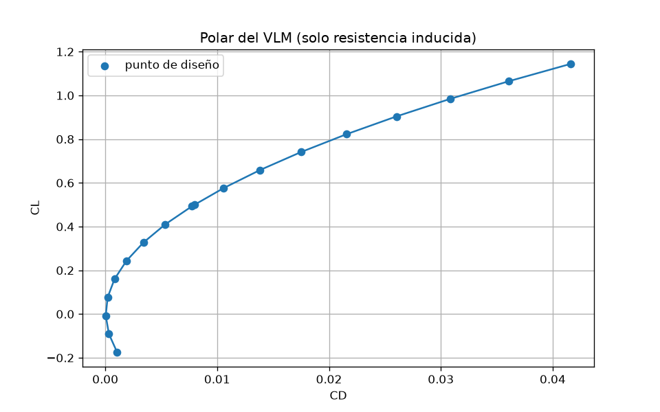
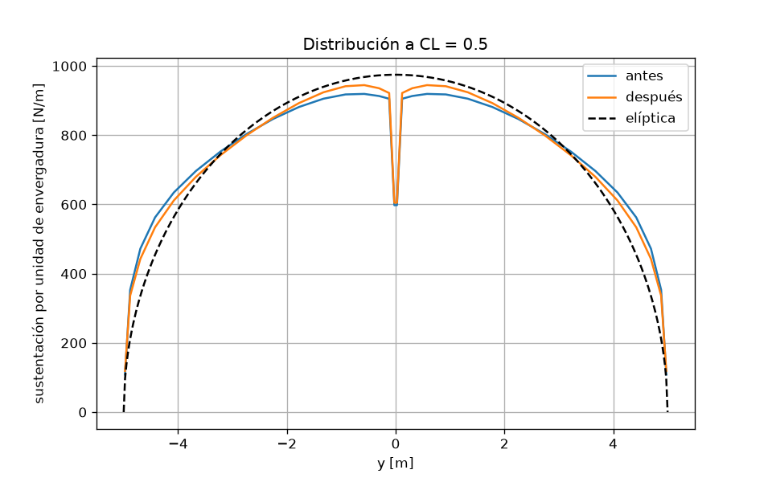
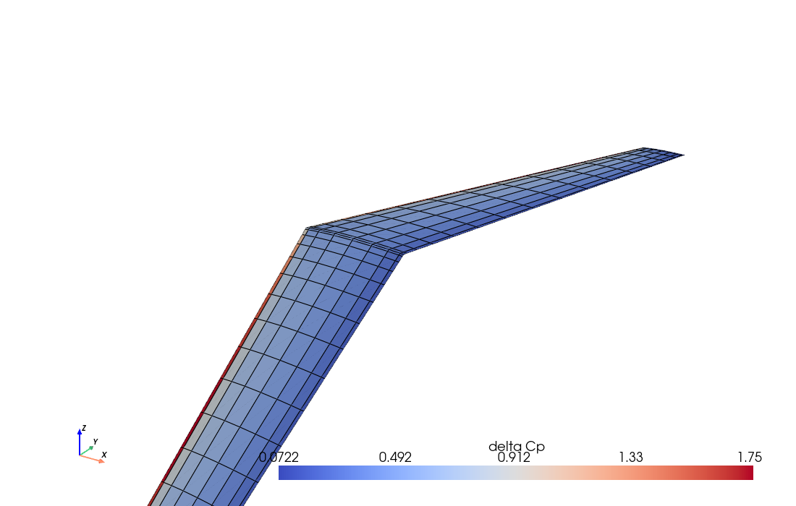

Ala en flecha
Vortex lattice de una ala trapezoidal con perfil NACA 2412, una optimización pequeña del estrechamiento y de la torsión, y la malla de paneles en 3D. El código está en ala.py.
Geometría
Envergadura $b=10$ m, superficie $S=10$ m$^2$, así que $\mathrm{AR}=10$. Flecha del borde de ataque: 25 grados. Velocidad 50 m/s. El estrechamiento $\lambda=c_{\mathrm{punta}}/c_{\mathrm{raiz}}$ no cambia $b$ ni $S$. La torsión es cero en la raíz.
El VLM no tiene viscosidad. $C_D$ es resistencia inducida.
Sustentación
Entre $-2$ y $8$ grados la pendiente es $C_{L\alpha}=0.0831$ por grado ($4.76$ por radián). La curvatura del perfil deja $C_L(0)=0.160$.


Menos resistencia inducida
A $C_L=0.5$ se minimiza $C_D$ con asb.Opti. Las variables son
$\lambda$, la torsión de punta y el ángulo de ataque. La eficiencia
usa la misma $C_D$ del campo cercano antes y después.
| Caso | $\lambda$ | torsión de punta | $\alpha$ | $C_L$ | $C_D$ | $e$ |
|---|---|---|---|---|---|---|
| Antes | 0.45 | 0 | 4.08° | 0.500 | 0.007967 | 0.999 |
| Después | 1.00 | −4.83° | 6.53° | 0.500 | 0.007794 | 1.021 |
La flecha carga la punta. El óptimo de esta parametrización llega al límite $\lambda=1$ y añade torsión negativa: descarga la punta y se acerca a la elipse. $e$ un poco por encima de 1 es el campo cercano del VLM, no una ala mejor que la elíptica.

Paneles en 3D
Ala de partida a $C_L=0.5$. El color es $\Delta C_p$: fuerza normal del
panel dividida por la presión dinámica y el área. Se puede girar la vista.
El fichero ala.vtu abre en ParaView, con
delta_Cp y gamma en las celdas.
